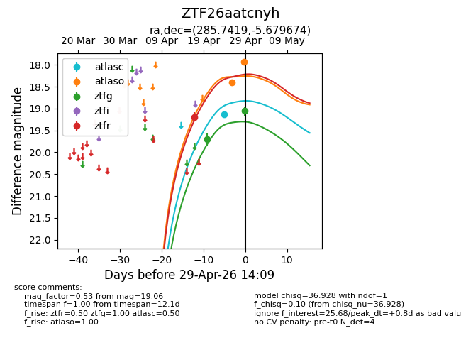
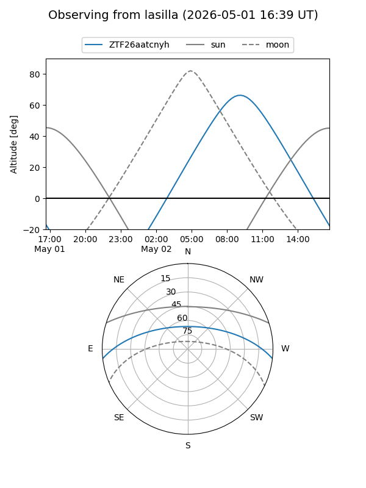
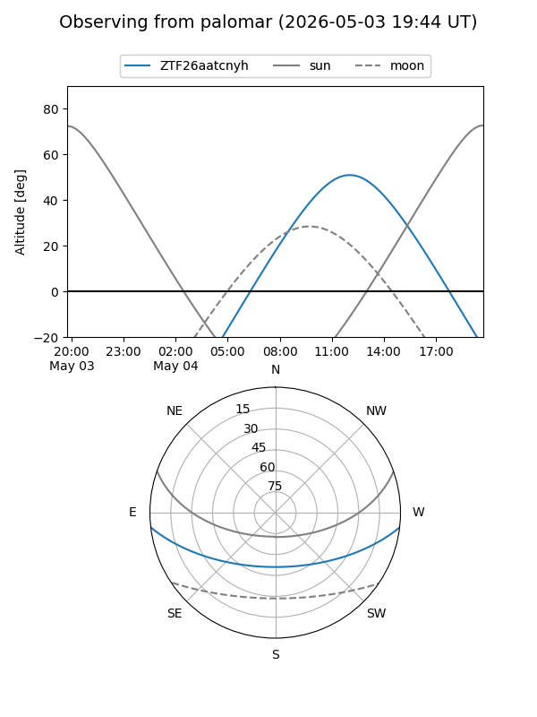
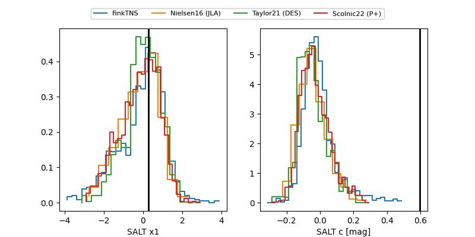

ZTF26aatcnyh
Target ZTF26aatcnyh at 2026-04-29 14:13
Aliases and brokers:
FINK: link
Lasair: link
ALeRCE: link
alt names
ZTF26aatcnyh (ztf,fink_ztf)
Coordinates:
equatorial (ra, dec) = 285.7419,-5.67967
equatorial (HMS+DMS) = 19:02:58.05,-05:40:46.82
galactic (l, b) = (29.1749,-5.14414)
Flags:
Photometry:
last atlasc=19.13, atlaso=17.94, ztfg=19.06, ztfr=19.19
1 atlasc, 2 atlaso, 2 ztfg, 1 ztfr detections
Lightcurve

Visibility


Additional plots
